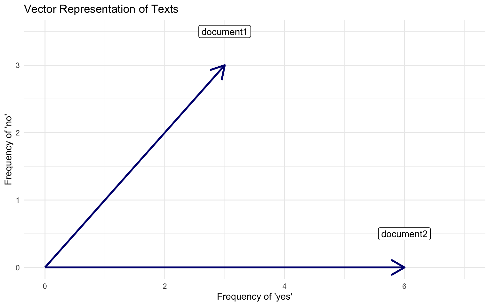
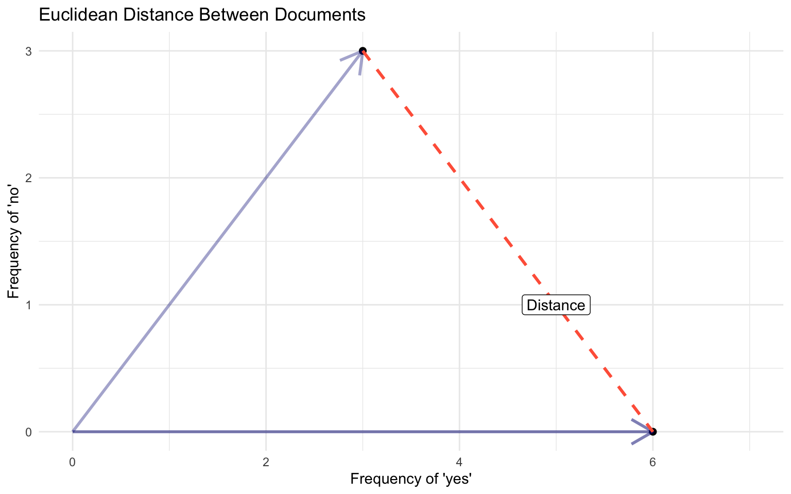
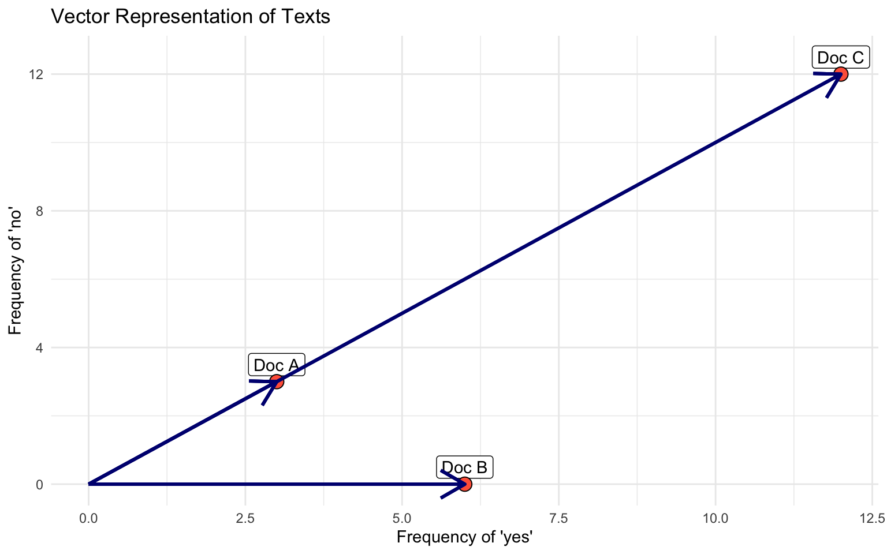
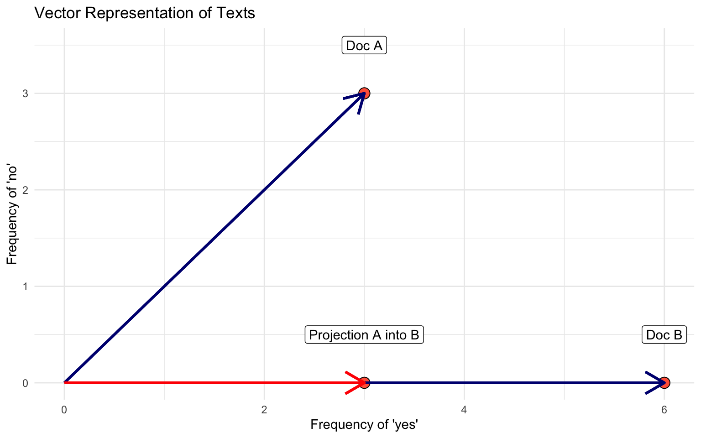
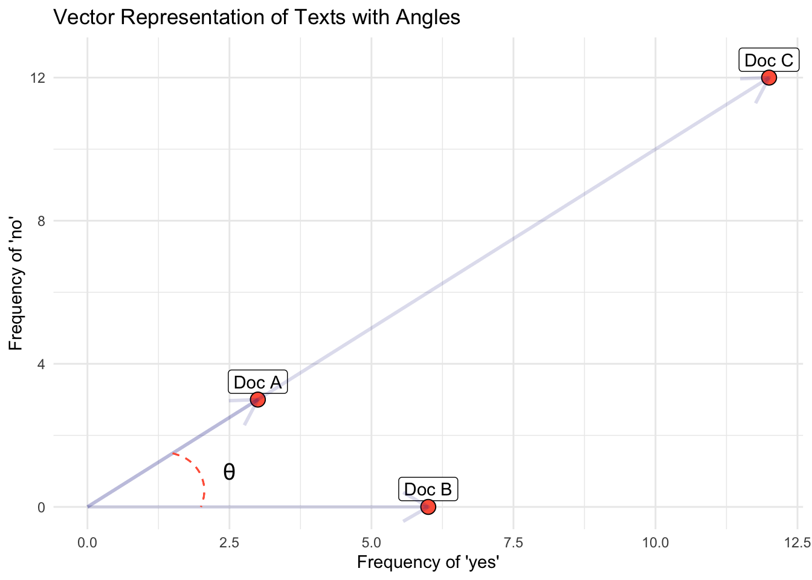

PPOL 6801 - Text as Data - Computational Linguistics
Week 3: Descriptive Inference - Comparing Documents
Coding: Pre-processing + text representation
Housekeeping
You have your pairs for the replication exercise.
Next steps:
Select the paper you wish to replicate (until lecture day next week)
Post on Slack
Talk to me if you have any issues
Where are we?
Last week:
Pre-processing text + bag of words ~> reduces greatly text complexity (dimensions)
Text representation using vectors of numbers ~> document feature matrix (text to numbers)
Example of counting words to make inference
Plans for today
We will start thinking about latent outcomes from text. Our first approach will focus on descriptive inference based on documents:
Comparing documents
Using similarity to measure text-reuse
- Quick linear algebra review
Evaluating complexity in text
Weighting (TF-iDF)
Recall: Vector space model
To represent documents as numbers, we use the vector space model representation:
A document \(D_i\) is represented as a collection of features \(W\) (words, tokens, n-grams, etc…)
Each feature \(w_i\) can be placed in a real line
A document \(D_i\) is a point in a \(\mathbb{R}^W\)
- Each document is now a vector,
- Each entry represents the frequency of a particular token or feature.
- Stacking those vectors on top of each other gives the document feature matrix (DFM).
Document-Feature Matrix: fundamental unit of TAD
Source: Arthur Spirling TAD Class
In a two dimensional space
Warning: package 'ggplot' is not available for this version of R
A version of this package for your version of R might be available elsewhere,
see the ideas at
https://cran.r-project.org/doc/manuals/r-patched/R-admin.html#Installing-packagesWarning: 'BiocManager' not available. Could not check Bioconductor.
Please use `install.packages('BiocManager')` and then retry.Warning in p_install(package, character.only = TRUE, ...):Warning in library(package, lib.loc = lib.loc, character.only = TRUE,
logical.return = TRUE, : there is no package called 'ggplot'Warning in pacman::p_load(ggplot, tidyverse): Failed to install/load:
ggplotWarning: Using `size` aesthetic for lines was deprecated in ggplot2 3.4.0.
ℹ Please use `linewidth` instead.
Comparing Documents
How `far’ is document a from document b?
Using the vector space, we can use notions of geometry to build well-defined comparisons between the documents.
- in multiple dimensions!!

Euclidean Distance
The ordinary, straight line distance between two points in space. Using document vectors \(y_a\) and \(y_b\) with \(j\) dimensions
Can be performed for any number of features J
- No negative distances
- Distance between documents is zero when documents are identical
- Distance between documents is symmetric
- Satisfy triangle inequality: \(s_{ik} \leq s_{ij} + s_{jk}\)
Euclidean Distance, w=2
\(U\) = [0, 2.51, 3.6, 0] and \(yV\) = [0, 2.3, 3.1, 9.2]
\(\sum^{i}(U_{i} - y_{V_i})^2\) = \((0-0)^2 + (2.51-2.3)^2 + (3.6-3.1)^2 + (9-0)^2\) = \(84.9341\)
\(\sqrt{\sum_{j=1}^j (y_a - y_b)^2}\) = 9.21
Exercise

- Which documents will the euclidean distance place closer together?
- Does it look like a good measure for similarity?
- Doc C = Doc A * 3
Cosine Similarity
Euclidean distance rewards magnitude, rather than direction
\[ \text{cosine similarity}(\mathbf{U}, \mathbf{V}) = \frac{\mathbf{U} \cdot \mathbf{V}}{\|\mathbf{U}\| \|\mathbf{V}\|} \]
Quick Linear Algebra Review
Vectors
Vector: an ordered list of numbers in a space with well-defined addition and scalar multiplication operations
It is defined as an object with both magnitude and direction
Magnitude: how long it is
Direction: where it points
Vectors
The dimensionality of a vector is the number of elements it has
For example, [1, 2, 3, ] has dimensionality 3
In other words, it is a vector in 3D space
The vector [3,5] is 2D
Scalar Multiplication of Vectors
Given a vector U and a scalar constant k, we can multiply a vector.
\[ U*k = [k*u_1, k*u_2, k*u_3 ... k*u_n] \]
increases the length/magnitude
does not change the direction

Magnitude of a vector
The denominator of the cosine similarity formula gives you the magnitude or length of a vector.
Magnitude: Use L2 Norm, Euclidean distance from origin point (0,0)
It converts a vector to a scalar representing the size of a vector
\[ ||\mathbf{U}|| = \sqrt(u1*u1 + u2*u2 ... u_n*u_n) = \sqrt(\sum^i u_i^2) \]
Vector Multiplication: Dot (Inner) Product
The numerator of the cosine similarity is called ‘dot product’ between two vectors. This a multiplication between two vectors.
\[ \mathbf{U} \cdot \mathbf{V}= u_1*v_1 + u_2*v_2 + u_n*v_n = \sum^i u_i*v_i \]
- Notice: the dot product maps two vectors to real numbers.
Dot Product: Geometric Intuition
Intuition:
“the product of two vectors a and b is the projection of a onto b times the length of b (it is symmetric, so equivalently the projection of b onto a times the length of a).” (GMB, pp71)
You can see this by considering the geometric formula for the dot product:
\[ \mathbf{U} \cdot \mathbf{V}= ||U|| \cdot ||V|| \cdot cos(\theta) \]
More interestingly:
\[ ||Proj(U)_v ||= ||U|| cos(\theta) \]
Yet another formula
\[ \mathbf{U} \cdot \mathbf{V} = ||Proj(U)_v || ||V|| \]
Dot Product Visually

“the product of two vectors a and b is the projection of a onto b times the length of b (it is symmetric, so equivalently the projection of b onto a times the length of a).” (GMB, pp71)
Back to the Cosine Similarity
\[ \text{cosine similarity}(\mathbf{U}, \mathbf{V}) = \frac{\mathbf{U} \cdot \mathbf{V}}{\|\mathbf{U}\| \|\mathbf{V}\|} \]
\(U \cdot V\) ~ dot product between vectors
- it is a projection of one vector into another
- Works as a measure of similarity
- But rewards magnitude
\(||\mathbf{U}||\) ~ vector magnitude, length ~ \(\sqrt{\sum{u_{i}^2}}\)
- normalizes a vector projection of documents’ by their lengths
cosine similarity captures some notion of relative direction controlling for different magnitudes.
Cosine Similarity
Cosine function has a range between -1 and 1.
- Consider: cos (0) = 1, cos (90) = 0, cos (180) = -1
Warning: package 'ggplot' is not available for this version of R
A version of this package for your version of R might be available elsewhere,
see the ideas at
https://cran.r-project.org/doc/manuals/r-patched/R-admin.html#Installing-packagesWarning: 'BiocManager' not available. Could not check Bioconductor.
Please use `install.packages('BiocManager')` and then retry.Warning in p_install(package, character.only = TRUE, ...):Warning in library(package, lib.loc = lib.loc, character.only = TRUE,
logical.return = TRUE, : there is no package called 'ggplot'Warning in pacman::p_load(ggplot, tidyverse): Failed to install/load:
ggplotWarning in acos(dot_product/magnitudes): NaNs produced
Exercise
The cosine function can range from [-1, 1]. When thinking about document vectors, cosine similarity is actually constrained to vary only from 0 - 1.
- Why does cosine similarity for document vectors can never be lower than zero? Think about the vector representation and the document feature matrix.
Applications: Think Tank Reports
Compiled a dataset of 36,603 episodes from 79 prominent political podcasters
Pre-processed text transcripts
Calculated the cosine similarity between podcast transcripts and fact-checked claims (PolitiFact and Snopes)
Set a cosine similarity threshold (e.g., 0.5) to filter significant matches
Once a claim was detected in a transcript, the analysis moved to determine how the claim was presented (manual review, sentiment analysis)
Quantified the prevalence of unsubstantiated and false claims across the podcast episodes
Quizz: What could have gone wrong if the author had used euclidean distance between podcasts and fact-checked news?
More Metrics

How to decide
Magnitude? Euclidean or Manhattan Distance if total size/frequency of terms is important.
Proportions? Cosine Similarity if relative distribution of terms matters more than document length.
Overlap? Jaccard Similarity if interested in shared terms regardless of frequency.
Trends? Pearson Correlation to compare patterns in term distributions across documents.
Sparse, high-dimensional text data? Cosine similarity because it emphasizes proportional relationships and ignores document length.
Dense data with similar distribution? Euclidean distance because length are likely the same
Break!
We saw how to compare documents… now let’s move to other features of documents description. Let’s talk about:
Lexical Diversity
Readability
Political Sophistication
Lexical Diversity
Length refers to the size in terms of: characters, words, lines, sentences, paragraphs, pages, sections, chapters, etc.
Tokens are generally words ~ useful semantic unit for processing
Types are unique tokens.
Typically \(N_{tokens}\) >>>> \(N_{types}\)
Type-to-Token ratio
\[ TTR:\frac{\text{total type}}{\text{total tokens}} \]
- authors with limited vocabularies will have a low lexical diversity
Issues with TTR and Extensions
TTR is very sensitive to overall document length,
- Shorter texts may exhibit fewer word repetitions
Length also correlates with topic variation ~ more types being added to the document
Readability
Readability: ease with which reader (especially of given education) can comprehend a text
Combines both difficulty (text) and sophistication (reader)
Average sentence length (based on the number of words) and average word length (based on the number of syllables) to indicate difficulty
Human inputs to built parameters about the readers
Hundred years of literature on the measurement of ‘readability’. The general issue was assigning school texts to students of different ages and abilities.
- Example: Flesch-Kincaid readability index
Flesch-Kincaid readability index
Interpretation: 0-30: university level; 60-70: understandable by 13-15 year olds; and 90-100 easily understood by an 11-year old student.
Spirling, 2016. The effects of the Second Reform Act
Research Question: How did suffrage extension affected the behavior of members of parliament (MPs) relative to ministers during the Victorian period?
Data: House of Commons (1832-1915) speeches
Method: FRE scores
Your turn: Results

How much can we trust on FRE? Discussion of Benoit et. al.

Benoit et al., 2019, Political Sophistication.
Approach
Get human judgments of relative textual easiness for specifically political texts.
Use a logit model to estimate latent “easiness” as equivalent to the “ability” parameter in the Bradley-Terry framework.
Use these as training data for a tree-based model. Pick most important parameters
Re-estimate the models using these covariates (Logit + covariates)
Using these parameters, one can “predict” the easiness parameter for a given new text
- Nice plus ~ add uncertainty to model-based estimates via bootstrapping
Benoit et al., 2019, Political Sophistication

Weighting Counts
Can we do better than just using frequencies?
So far our inputs for the vector representation of documents have relied simply the word frequencies.
Can we do better?
One option: weighting
Weighting function:
- Reward words more unique;
- Punish words that appear in most documents
TF-IDF = Term Frequency - Inverse Document Frequency
\[ \text{TF-IDF}(t, d) = \text{TF} \times \text{IDF} \]
\[ \text{TF}(t, d) = \frac{\text{Number of times term } t \text{ appears in document } d}{\text{Total number of terms in document } d} \]
\[ \text{IDF}(t) = \log \left( \frac{\text{Total number of documents}}{\text{Number of documents with term } t \text{ in them}} \right) \]
Federalist Papers